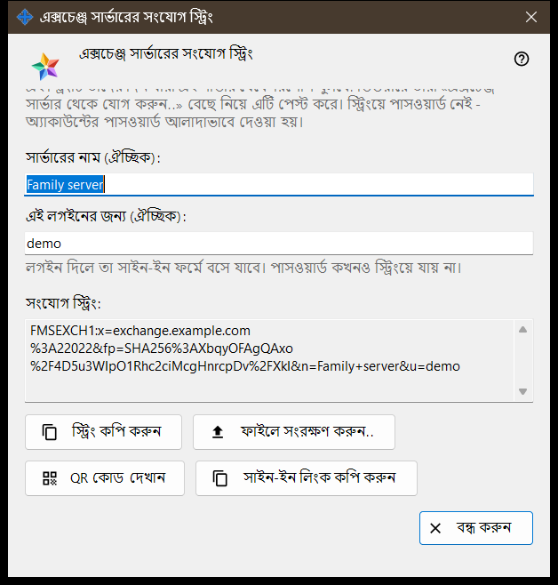
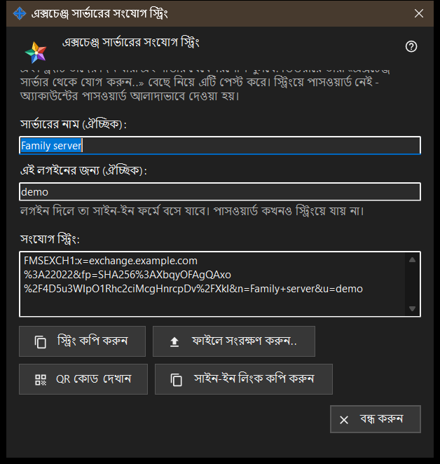

এক্সচেঞ্জ সার্ভারের সংযোগ স্ট্রিং
এটি কীসের জন্য
এই উইন্ডো সেই সংযোগ স্ট্রিং তৈরি করে, যা দিয়ে অন্য ডিভাইসগুলো এই এক্সচেঞ্জ সার্ভার খুঁজে পায় এবং এর সার্টিফিকেট যাচাই করে। এক্সচেঞ্জ সার্ভার সেটিংসে বা সার্ভারের প্রথমবার চালুর স্বাগতে থাকা বোতাম সংযোগ স্ট্রিং ও QR কোড.. দিয়ে এটি খুলুন। উইন্ডোটি কোনো সেটিং বদলায় না।


এই ক্রমে
- নিশ্চিত করুন সার্ভারের সার্টিফিকেট আছে এবং ক্লায়েন্টদের জন্য ঠিকানা ঠিক করা আছে।
- উইন্ডো খুলুন: স্ট্রিংটি সঙ্গে সঙ্গে দেখা যায়।
- চাইলে সার্ভারের নাম ও লগইন লিখুন; লেখা থামানোর কিছুক্ষণ পরে স্ট্রিং আবার তৈরি হয়।
- স্ট্রিং কপি করুন, ফাইলে সংরক্ষণ করুন, এর QR কোড দেখান বা সাইন-ইন লিংক কপি করুন।
- এটি অন্যজনকে দিন এবং অ্যাকাউন্টের পাসওয়ার্ড আলাদাভাবে দিন।
- বন্ধ করুন চাপুন।
উপাদানসমূহ
বোতাম কখন কাজ করে
বোতাম সংযোগ স্ট্রিং ও QR কোড.. তখনই চালু থাকে, যখন সার্ভারের সার্টিফিকেট আছে এবং ক্লায়েন্টদের জন্য ঠিকানা ঠিক করা আছে। ঠিকানা ফাঁকা থাকলে বোতাম বন্ধ থাকে এবং এর নিচের ইঙ্গিতে লেখা থাকে: আগে ক্লায়েন্টদের জন্য ঠিকানা ঠিক করুন: তা ছাড়া সংযোগ স্ট্রিং তৈরি করা যায় না। উইন্ডোর ভেতরে স্ট্রিং না থাকলে বোতামগুলো বন্ধ থাকে।
সার্ভারের নাম ও লগইন
ঘর সার্ভারের নাম (ঐচ্ছিক): সর্বোচ্চ 64টি অক্ষর নেয় এবং সার্ভারের নাম হিসেবে স্ট্রিংয়ে রাখা হয়। ঘর এই লগইনের জন্য (ঐচ্ছিক): 3 থেকে 64টি অক্ষর নেয় (a-z, 0-9, ডট, আন্ডারস্কোর, হাইফেন) এবং যে ডিভাইস স্ট্রিংটি ব্যবহার করে, তার সাইন-ইন ফর্মে তা বসে যায়। পাসওয়ার্ড কখনও স্ট্রিংয়ে যায় না।
সংযোগ স্ট্রিং
সংযোগ স্ট্রিং: শুধু-পাঠযোগ্য ঘর, যেখানে ফলাফল দেখা যায়: ক্লায়েন্টদের জন্য ঠিকানা, সার্টিফিকেটের ফিঙ্গারপ্রিন্ট এবং লেখা থাকলে নাম ও লগইন। যে ডিভাইস স্ট্রিংটি পায়, সে এতে দেওয়া ফিঙ্গারপ্রিন্টকেই বিশ্বাস করে, তাই কাউকে তা হাতে মেলাতে হয় না।
কপি ও সংরক্ষণ
বোতাম স্ট্রিং কপি করুন স্ট্রিংটি সাধারণ টেক্সট হিসেবে ক্লিপবোর্ডে রাখে, কারণ এটি গোপন নয়; নিচের লাইনে দেখা যায়: স্ট্রিং কপি হয়েছে। বোতাম ফাইলে সংরক্ষণ করুন.. একটি .fmsexch টেক্সট ফাইল লেখে (প্রস্তাবিত নাম exchange-server.fmsexch) এবং তার পথ দেখায়; অন্য ডিভাইস নিজের এক্সচেঞ্জ অ্যাকাউন্ট উইন্ডোর বোতাম ফাইল খুলুন.. দিয়ে তা পড়ে। ক্লিপবোর্ড ব্যস্ত থাকলে বা ফাইল লেখা না গেলে একটি লাইনে তা জানানো হয়।
QR কোড ও সাইন-ইন লিংক
বোতাম QR কোড দেখান স্ক্যান করার জন্য একই স্ট্রিংয়ের একটি ছবি খোলে; এতে শুধু একটি সার্ভারের নাম থাকে, কোনো কিছুতে প্রবেশাধিকার দেয় না। বোতাম সাইন-ইন লিংক কপি করুন কেবল তখনই দেখা যায়, যখন এই সার্ভার ওয়েব ক্লায়েন্ট পরিবেশন করে; এটি একই স্ট্রিং বহনকারী একটি ব্রাউজার লিংক কপি করে।
স্ট্রিং তৈরি না হলে
সতর্কতার রঙের একটি লাইন কারণ জানায়: নাম বা লগইন সীমার বাইরে; সার্ভারের সার্টিফিকেট নেই (সার্ভার একবার চালু করুন); অথবা এক্সচেঞ্জ সার্ভার সাড়া দেয়নি। কারণ দূর করলে স্ট্রিং আবার তৈরি হয়। বোতাম বন্ধ করুন উইন্ডো শেষ করে; নাম ও লগইন সংরক্ষিত হয় না।
ম্যানেজার সেটিংস · SFTP শেয়ারিং সেটিংস · এক্সচেঞ্জ সার্ভার সেটিংস